Imperium
Imperium Sugambrium
← all settlements · all regions · wiki index
The settlement of the region of Sugambria, held at the campaign start by Sugambri (Germanic) — their capital.
Size: Large town · Population: 1,100 · Buildings: 10
What is already built
| Building chain | Level | Building chain | Level | Building chain | Level | |||
|---|---|---|---|---|---|---|---|---|
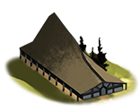 | core building | Governor's Villa | 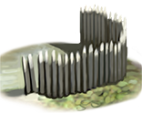 | defenses | Wooden Palisade | 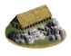 | governmentD | Homeland |
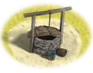 | health | Cisterns (Sanitation) | 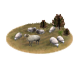 | highland pastoralism | Slope Pasturing (Husbandry) | hinterland region | Region Information Scroll | |
| hinterland roads | Roads | 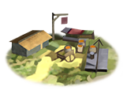 | market | Local Barter | 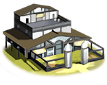 | military industrial complex | Basic Armoury | |
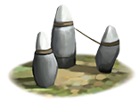 | temples standard | Shrine |
What can be recruited here
| Unit | Raised at | Cost | Upkeep | Unit | Raised at | Cost | Upkeep | Unit | Raised at | Cost | Upkeep | |||
|---|---|---|---|---|---|---|---|---|---|---|---|---|---|---|
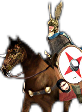 | Bodyguard (Frameae and Swords) | Homeland | 4,571 | 69 | Freemen | Homeland | 1,669 | 611 | 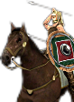 | Freemen Cavalry | Homeland | 1,987 | 800 | |
| Freemen Hundred | Homeland | 1,642 | 601 | 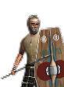 | Freemen Vanguard | Homeland | 1,932 | 707 | Outsider Skirmish Rabble | Homeland | 926 | 339 | ||
| Sugambrian Wolf Warriors | Homeland | 1,981 | 725 |
Waiting on a condition whose bracketing the mod does not state — 3 units
| Unit | Raised at | Cost | Upkeep | Unit | Raised at | Cost | Upkeep | Unit | Raised at | Cost | Upkeep | |||
|---|---|---|---|---|---|---|---|---|---|---|---|---|---|---|
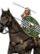 | Celtic Light Cavalry | Region Information Scroll | 1,568 | 631 | 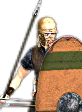 | Celtic Spearmen | Region Information Scroll | 1,554 | 569 | Celtic Swordsmen | Region Information Scroll | 1,588 | 581 |
The land around it
Terrain, climate, fertility, water, port, the trade goods placed inside the borders, and the recruitment zones and homeland this ground counts as, are all on Sugambria — stated there once, so the two pages cannot disagree.